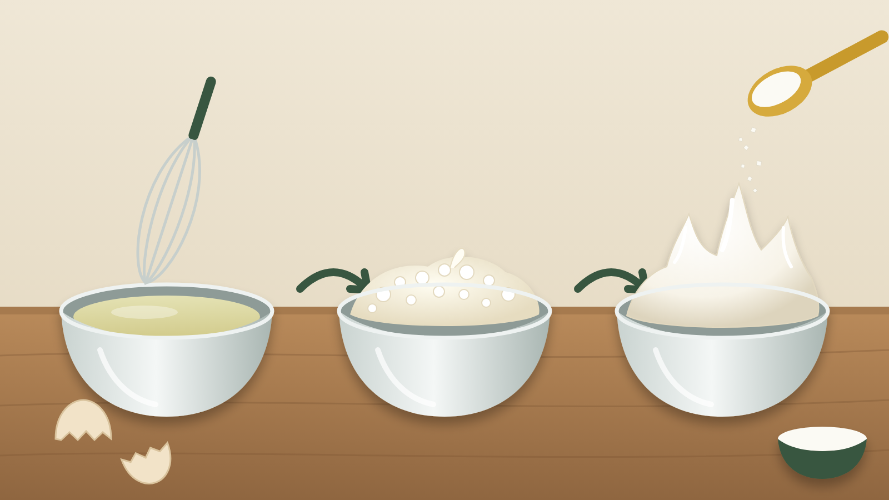

卵白の泡へ砂糖を入れる順番｜泡立つ速さと泡の安定
メレンゲを作ろうとして、砂糖を最初から全部入れたら、いつまでたってもふくらまない。逆に、砂糖を入れずに泡立てたら、すぐにボソボソになった。砂糖は泡の味方なのか、それとも邪魔者なのか。
結論は、まず卵白だけで泡の形を作り、白くふんわりしてから砂糖を入れ、そのあともしっかり泡立てること。 砂糖は泡ができるのを遅らせる一方で、できた泡を長持ちさせる。だから「入れるかどうか」より「いつ入れるか」で仕上がりが変わる。
砂糖は、泡を作るのが苦手で、守るのが得意
卵白を泡立てると、卵白のたんぱく質が空気のまわりに集まり、薄い膜になって泡を包む。砂糖は卵白の水に溶けて、液をとろりと重くする。液が重いと、泡のまわりから水が流れ落ちにくくなり、泡はしぼみにくい。
ただ、液が重いと、最初に空気を取り込む動きも鈍くなる。たとえるなら、砂糖は風船の口を閉じるひもだ。風船がまだふくらむ前に口を縛ると、空気は入らない。ふくらんでから縛れば、しぼまずに形が残る。
確認された結果と、そこから分かること
砂糖を入れる量と時期を変えて卵白を泡立てた研究では、砂糖を多く入れるほど、泡に空気が入るまでの時間が長くなった。卵白がまだ泡立ちきらないうちに多めの砂糖を加えると、泡の中の空気の量が大きく下がった。卵白がほぼ泡立ってから加えた場合は、空気の量が落ちずに安定した。さらに、泡ができてから加えるなら、一度に入れても二回に分けても差はほとんどなかった。
別の研究では、砂糖を多く入れたメレンゲほど、時間がたっても泡から水が分かれにくかった。また、卵白を先に泡立ててから砂糖を加え、そのあとも混ざる程度以上によく泡立てると、泡が長持ちした。海外の総説も、砂糖は泡立ての序盤ほど泡ができるのを遅らせると整理している。
つまり、砂糖の役割は「ふくらませること」ではなく「ふくらんだ泡を守ること」だ。泡の土台ができる前の砂糖は、空気の入り口をふさいでしまう。土台ができたあとの砂糖は、泡の膜を支え、水が抜けるのを抑える。
家庭では「先に形、あとで砂糖」
この結果から考えると、家庭で大切なのは、砂糖を入れる回数より、最初の砂糖を入れる瞬間を見極めることだ。よく「砂糖は三回に分けて」と言われるが、泡の土台ができていれば、回数そのものに神経質になりすぎなくてよい。むしろ、卵白が透明なうちに砂糖を入れてしまうほうが失敗につながりやすい。
もう一つは、砂糖を入れたあとに泡立てをやめないことだ。砂糖が見えなくなっただけで止めず、つやが出て、泡立て器の先に角がしっかり立つまで続ける。
卵白2個分（約60〜70g）とグラニュー糖60gのメレンゲなら、次のように進めよう。
- ひびのない卵を使い、割ったらすぐ泡立てる。黄身や油が入らないよう、乾いた清潔なボウルに卵白だけを入れる。
- ハンドミキサーで、まず卵白だけを泡立てる。透明だった卵白が白く細かい泡になり、持ち上げると先がやわらかく曲がるところまで進める。
- ここで砂糖を加える。一度に入れても、二〜三回に分けてもよい。分けるなら、一回ごとに砂糖がなじむまで泡立てる。
- 砂糖を入れ終わったら、つやが出て角がピンと立つまで泡立てを続ける。
- 生地へ混ぜるか焼くまで、できるだけ間を空けずに使う。生の卵に触れた手と道具は、使い終わったらすぐに洗う。
ほかの料理にも使える考え方
「先に形を作り、あとで守る材料を入れる」という考え方は、シフォンケーキやスフレ、淡雪かんなど、卵白の泡を使う料理すべてに通じる。レシピを選ぶときは、砂糖の量が多いほど泡立てに時間がかかる代わりに、泡がしぼみにくいと見込んでおくと段取りを立てやすい。デコレーションのように絞ってから食べるまで時間があるなら砂糖をしっかり入れたメレンゲを、すぐ焼くケーキ生地なら軽めの砂糖で、と使い分ける判断にもつながる。
まとめ
砂糖は、泡を作るときには邪魔をし、できた泡を守るときに力を発揮する。だから卵白だけで白くふんわりするまで泡立ててから砂糖を入れ、そのあともつやと角が出るまで泡立てる。入れる回数より、入れる瞬間を見ることが失敗を減らす近道だ。